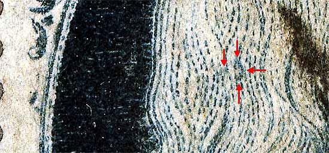
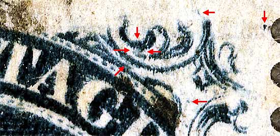

Pos 2R5, (Scott #24 var)
Type Va, Relief A
Issued only perforated.
CURL IN HEAD
 Sixteen top row stamps from plate 5 have a blur between ornaments x and y. This "Ornament X/Y blur" occurs on Positions 1L5 to 10L5 and 1R5 to 6R5. It was produced by a bit of foreign matter adhering to the transfer roll. The first position it occurs on, 6R5, shows this feature the strongest. It gradually became weaker with each successive entry, working right to left, until it became very faint on 1L5. Neinken notes this as a plating mark on the plating diagrams for a few positions, namely 2-9-10L5 and 5R5. See Figure 2, below.
Sixteen top row stamps from plate 5 have a blur between ornaments x and y. This "Ornament X/Y blur" occurs on Positions 1L5 to 10L5 and 1R5 to 6R5. It was produced by a bit of foreign matter adhering to the transfer roll. The first position it occurs on, 6R5, shows this feature the strongest. It gradually became weaker with each successive entry, working right to left, until it became very faint on 1L5. Neinken notes this as a plating mark on the plating diagrams for a few positions, namely 2-9-10L5 and 5R5. See Figure 2, below.

The mid-image four red arrows indicate the "Ornament X/Y Blur." Sixteen top row stamps from plate 5 have this blur between Ornaments X and Y. This "Ornament X/Y blur" occurs on Positions 1L5 to 10L5 and 1R5 to 6R5. It was produced by a bit of foreign matter adhering to the transfer roll. The first position it occurs on, 6R5, shows it this feature the strongest. It gradually became weaker with each successive entry, working right to left, until it became very faint on 1L5.

Thanks for visiting this site. I hope you learn something new as we are making new discoveries all the time. You, the visitor, have my permission to link to my pages and to share the INFORMATION with others. The images themselves fall under the fair use guidelines established by the United States Congress and Copyright law. Basically contact us before using. I also ask in return that you send me an e-mail if I have made a mistake, or have made some other technical blunder that in my rush to put these pages up would cause the visitor confusion. Please also visit my other website at www.slingshotvenus.com. and support the live music arts. While your there, be sure to purchase our music. There are not many philatelic rock stars around and we need all the help we can get. :-)
I can be reached at: nerdman@ix.netcom.com